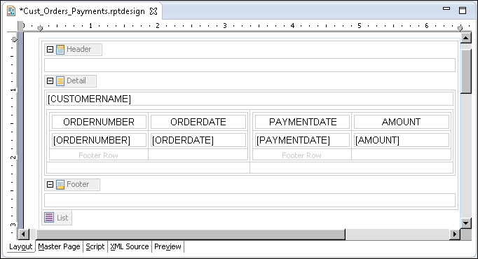
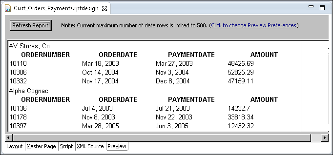
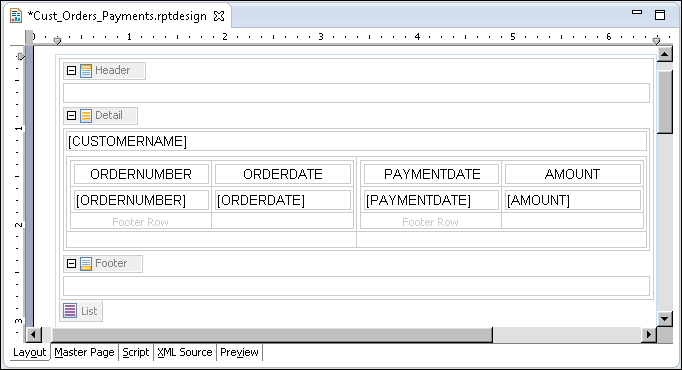
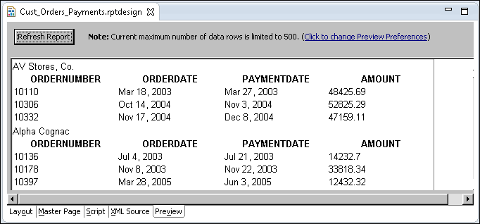

Task 12: Display the subreports next to one another Now that the subreports display the correct data, you can focus on laying out the subreports next to one another. Placing two tables next to one another does not work because BIRT Report Designer creates block-level elements, which means that each element starts on a new line. To display side-by-side tables, you insert the tables in a grid. The grid enables you to align elements easily. 1 Choose Layout to resume editing the report. 2 Drag a grid element from the palette, and drop it into the Detail row, between the [CUSTOMERNAME] data element and the Orders table. Before you drop the grid, make sure the straight cursor appears on the left side of the Orders table. Insert Grid prompts you to specify the number of columns and rows for the grid. 3 In Number of columns, type 2 and in Number of rows, type 2, then choose OK. A grid with two columns and two rows appears in the layout editor. 4 Move the Orders table to the first cell in the first grid row. To do so, select the Table tab in the bottom left corner of the table, then drag the table and drop it in the grid cell. 5 Move the Payments table to the second grid cell. The report layout should look like the one shown in Figure 12-25.  Figure 12-25 Side-by-side subreports in the report design 6 Preview the report. The report should look like the one shown in Figure 12-26.  Figure 12-26 Report preview showing side-by-side subreports
Now that the subreports display the correct data, you can focus on laying out the subreports next to one another. Placing two tables next to one another does not work because BIRT Report Designer creates block-level elements, which means that each element starts on a new line. To display side-by-side tables, you insert the tables in a grid. The grid enables you to align elements easily.

